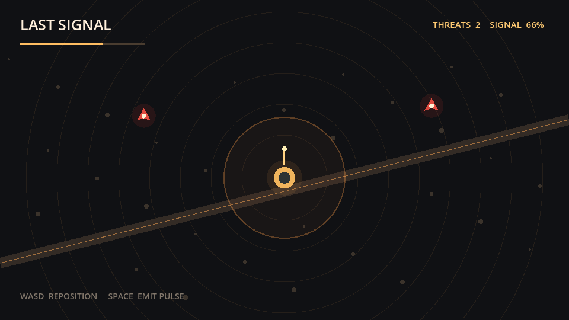

Last Signal
gamephanes-public==0.1
Gameplay Systems
Combat
Reference environment
Public evaluator
unrated
Usage
node ./bin/gamephanes.js run ./benchmark/tasks/last-signal.json \
--godot /path/to/godotRuntime evidence

This executable Godot project is the feedback surface for the task. Evaluator-controlled inputs probe the candidate project; the Coding Agent acts through terminal commands and code changes.
Play environmentInstruction
Reposition the field transmitter and clear four threats with directed pulses.
Success criteria
- field_movementThe operator can reposition in the field.
- pulse_combatA pulse removes the nearest active threat.
- signal_secureClearing all threats secures the channel.
Evaluation contract
- Task ID
- showcase_last_signal_001
- Runtime
- Godot 4.x
- Timeout
- 15 seconds
- Assertions
- 4 deterministic checks
- Harness
- External, benchmark-owned
- Agent action
- Terminal commands and project edits
Tags
PUBLIC REFERENCE ENVIRONMENT. THIS PAGE DOCUMENTS THE OPEN CONTRACT; SEALED STARTERS, HIDDEN ASSERTIONS, AND PRODUCTION ROLLOUTS ARE NOT PUBLISHED HERE.